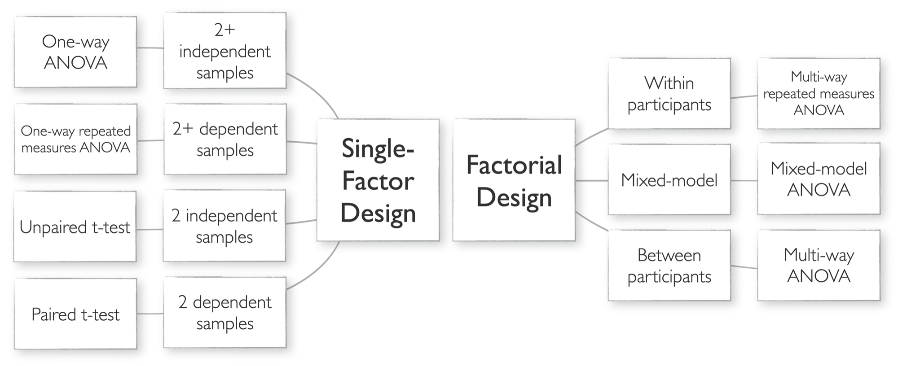

Answer two or three questions about your study. You’ll get the name of your design, the test that fits it, and what to watch for. Use it for the Step-by-Step Experimental Design (due Fri Oct 16): steps 2 and 4 decide every answer here.
See the whole decision map

These are the standard parametric tests for each design, assuming a continuous outcome (DV) and roughly normal residuals. The statistics sessions later in the term cover assumptions, effect sizes, and what to do when they don’t hold. A published paper may analyze the same design another way (for example, with regression models); the design still tells you what comparison the analysis has to make.